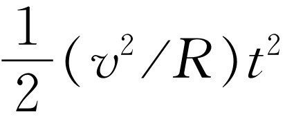
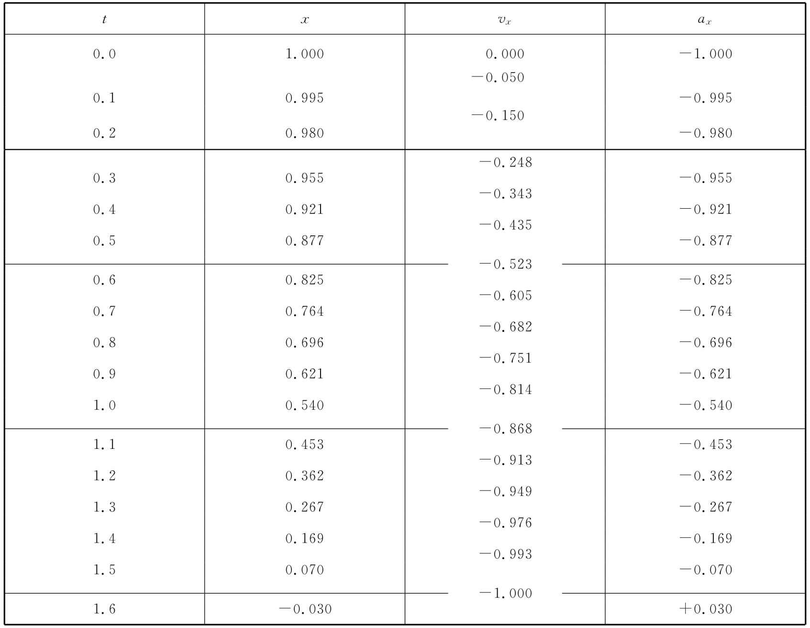
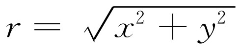
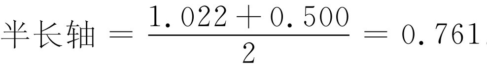

动力学定律，或运动定律的发现在科学史上是一个激动人心的时刻。在牛顿时代以前，像行星之类事物的运动那是一个谜，但在牛顿以后，一切都了如指掌了。甚至连由于行星之间的扰动而引起的与开普勒定律的微小偏离，也可以计算出来。摆的运动，用弹簧和重物组成的振子的运动等等，在牛顿定律被阐明后全都能圆满地加以分析。对这一章来说情况也是这样：在本章前我们还不能计算挂在弹簧上的一个有质量的物体如何运动，更不能计算由土星和木星在天王星上所引起的摄动。在这一章后，我们将不仅能计算振动着的有质量物体的运动，而且也能计算由土星和木星对天王星所产生的摄动！
伽利略发现的惯性原理 对于运动的理解给推进了一大步。这条原理是：如果一个物体处在自由状态而不受干扰，则若此物体原来在运动，它就继续作匀速直线运动；若原来静止，则它仍然静止。当然，这种情况在自然界中永远不会出现，因为如果我们让一个木块在桌面上自由滑动，它就会停下来，但这正是由于它并不是 不受干扰的——它与桌面间存在着摩擦。要找出这条正确的规律需要一定的想象力，而这种想象力正是伽利略提供的。
当然，下一步所需要的是用来求出物体受到某种影响时，它的速度如何变化 的规则。这是牛顿的贡献。牛顿写下了三条定律：第一定律只是刚才叙述过的伽利略惯性原理的重新表达。第二定律提供了一个具体的方法来确定在称为力 的种种影响下速度如何发生变化。第三定律在某种程度上描述了力，我们将另行讨论。这里我们将只讨论第二定律，它断言，力以下述方式引起物体运动的变化：某个称为动量的量的时间变化率正比于力 。我们一会儿将用数学形式来表达第二定律，但首先让我们解释一下概念。
动量 与速度 不同。在物理学中使用的大量词汇，虽然在日常用语中可能并没有精确含义，但在物理学上它们都有精确的物理含义。动量就是一个例子，我们必须严格地定义它。如果我们用手臂在一个轻的物体上推一下，它很容易运动；如果我们用同样的力气去推另一个通常所谓的重得多的物体，它的运动就会慢得多。实际上，我们必须把“轻”与“重”的词汇改为质量较小和质量较大，因为应当理解一个物体的重量 和其惯性 之间存在着差别（为了使它运动起来有多难是一回事，它称起来有多重是另一回事）。重量与惯性是成正比 的，而且在地球表面上也常常把它们在数值上取为相等，这就在一定程度上使学生产生混淆。在火星上，重量的概念将不同，但为了克服惯性所需要的力的大小则是相同的。
我们用“质量”这个术语作为惯性的定量量度，并且可以这样来测定质量，例如使一个物体以一定的速率沿圆周运动，然后测出为了保持它作圆周运动需要多大的力。用这种方法，我们就能找出每个物体的确定的质量。物体的动量 是它的质量和速度两部分的乘积。于是牛顿第二定律可以在数学上写成这种方式
这里应当考虑下列几点。在写出任何这样的定律时，我们使用了许多直觉的观念，隐含的意义，以及不同的假设，以便在开始时近似地组成我们的“定律”。以后我们可以回过头来更详细地研究每一项的含义究竟是什么，但是如果我们操之过急，就会搞糊涂了。所以在开始时，我们认为有几件事情是当然的。首先，物体的质量是一个常数 ；这并非真正如此，但我们将从牛顿近似开始，假定质量不变，并且在所有时间中都相同；其次，当我们把两个物体放在一起时，它们的质量是相加 的。当然，在牛顿写下他的方程时，就暗含了这些观念，否则方程就毫无意义了。比如，假定质量与速度成反比，那么动量在任何情况下将永不改变 ，所以除非你知道质量怎样随速度而变化，否则这个定律就毫无意义了。一开始我们就认为，质量是不变的 。
关于力也隐含了某些东西。作为一种粗略的近似，我们往往把力看作是利用肌肉作出的推或拉，但现在有了这条运动定律后，我们就能更精确地定义它。最重要的是要了解到这个关系所包含的内容不仅有动量或速度在数值 上的变化，而且还有在方向上 的变化。如果质量是常数，那么方程式（9.1）也可写为
加速度a 是速度的变化率，而牛顿第二定律不仅表明一个给定的力的效应与质量成反比，还表明速度变化的方向 与力的方向 相同。因此我们必须了解速度的变化，即加速度，有着比日常用语中更广泛的含义：运动物体的速度既可以通过加快或减慢（当它变慢时，我们说它以负的加速度运动）来变化，也可以通过改变它的运动方向来变化。在第7章中已讨论过速度和加速度垂直的情况。那里我们看到，以恒定速率v 在半径为R 的圆周上运动的物体，如果t 很小，它偏离直线的距离就等于 ，因而与运动方向垂直的加速度的公式是
而与速度垂直的力将使物体沿曲线运动。这条曲线的曲率半径可以通过将力除以质量以得到加速度，然后再利用式（9.3）求出。
为了使我们的语言更确切，在使用速率 和速度 这两个词时，我们将作进一步的定义。我们通常认为它们是相同的东西，在日常用语中它们也确实是一样的。但在物理学上，我们利用本来就有两个词 这一事实，并且决定用它们来区分两个概念。我们仔细地将同时具有大小和方向两者的速度和速率区分开来，而速率我们将只用以表示它的大小，但并不包括方向。我们可以通过描写一个物体的x ，y ，z 坐标如何随时间变化而将上面的意思更确切地表述出来。例如，假定某时刻一个物体如图9-1所示那样的运动着。在某一段给定的时间间隔Δt 内，它将沿x 方向移动一定的距离Δx ，向y 方向移动Δy ，向z 方向移动Δz 。这三个坐标变化的总效果是位移Δs ，Δs 是沿着边长为Δx ，Δy 和Δz 的平行六面体的对角线。用速度来表示的话，位移Δx 是速度的x 分量乘Δt ，Δy 与Δz 亦与此类似
Δx =v x Δt ，Δy =v y Δt ，Δz =v z Δt .（9.4）
在式（9.4）中，我们通过物体沿x 方向、y 方向和z 方向运动的快慢，已把速度分解为分量 。如果我们给出它的三个正交分量的数值
则速度的大小和方向两者都确定，从而速度也就完全确定。另一方面，物体的速率是
其次，我们假定，如图9-2所示，由于力的作用，速度改变为另一个方向，并取不同的数值。如果我们算出速度的x 、y 及z 分量的变化，就可以相当简单地分析这一表面上颇为复杂的情况。在时间Δt 内速度在x 方向分量的变化是Δv x =a x Δt ，这里a x 称为加速度的x 分量。同样，我们看出Δv y =a y Δt和Δv z =a z Δt 。用这些说法，我们看到，牛顿第二定律，即力与加速度方向相同时，力在x 、y 及z 方向上的分量就等于质量乘相应的速度分量的变化率
它实际上是三条定律。如同速度和加速度可以通过将一根标明大小和方向的线段投影到三个坐标轴上而分解为三个分量一样，用同样方法，一给定方向的力可用x 、y 和z 的一定的分量来表示
这里F 表示力的大小，（x ，F ）表示x 轴与F 的方向之间的夹角，等等。
式（9.7）给出牛顿第二定律的完整形式。如果知道了施加于物体上的力，并将它们分解为x 、y 和z 分量，我们就能从这些方程求出物体的运动。让我们考虑一个简单的例子。假设现在在y ，z 方向上没有力，只有在x 方向，比方说竖直方向上有力。方程式（9.7）告诉我们速度在竖直方向上有变化，但在水平方向上没有变化。这在第7章中已经用特殊仪器（图7-3）演示过了。一个平抛落体的水平运动没有任何变化，而它的竖直运动的方式就和水平运动不存在时的运动方式相同。换句话说，只要各方向的力 之间没有联系，在x 、y 和z 方向的三个运动将是独立的。
为了使用牛顿定律，我们必须具有某个力的公式；因为这些定律提醒我们：要注意力 。如果一个物体在加速，那么某种力就在起作用，让我们去寻找它。动力学今后要做的工作就是去寻找有关力的规律 。牛顿本人继续作了一些示例。在引力的情况下，他提出了这种力的特殊公式。至于其他的力，他在第三定律中提供了部分信息，这条定律讲的是作用和反作用相等，我们将在下一章研究它。
我们对前一个例子作进一步分析，作用在地面附近的物体上的力是什么？接近地球表面时，在竖直方向上由重力产生的力正比于物体的质量，而高度远小于地球半径R 时，这个力几乎与高度无关，即F =GmM/R 2 =mg ，这里g =GM/R 2 ，称为重力加速度 。这样重力定律告诉我们重量正比于质量；力作用在竖直方向上，等于质量乘以g 。我们再次发现水平运动是匀速运动。有意义的运动则在竖直方向上。牛顿第二定律告诉我们
消去m ，我们得到在x 方向上的加速度是一个常数，并等于g 。当然，这就是众所周知的重力作用下的自由落体定律，由此可得到方程
作为另一个例子，假设我们能够制作出如图9-3所示的一个装置——一个弹簧，它提供一个正比于距离而方向相反的力。如果我们不去管重力（当然它已被弹簧的原始伸长所平衡），而只去谈论外加 的力，我们看到，如果将这个有质量物体往下拉，弹簧就会往上拉，而如果我们把它往上推，弹簧就会往下推。这个装置经过了细心设计，使得我们向上推得越厉害，弹簧的力越大，精确地与离平衡状态的位移成正比，同样，弹簧往上拉的力也与我们把它向下拉多远成正比。如果观察这个装置的动力学情况，我们看到一个颇为美妙的运动——上，下，上，下，……。问题是，牛顿定律是否能正确地描写这一运动？让我们看看，利用牛顿定律式（9.7），究竟能不能精确计算出这个周期振动的情况。在本例中，方程是
这是一个x 方向上的速度变化率正比于x 的情况。由于保留各个系数不会有什么新的结果，因而我们想象或者是改变了时间的尺度，或者是在单位上有一个巧合，结果刚巧k /m =1。所以，我们打算来解方程
为此，我们必须知道v x 是什么；当然，我们已经知道，速度是位置的变化率。
现在我们来分析一下方程式（9.12）究竟意味着什么。假定在某一给定的时刻t 物体有一定的速度v x 和位置x 。那么，在稍晚一点的时间t +ε 时，速度与位置又各是多少呢？如果我们能够回答这一点，问题就解决了，因为这样我们就可以从给定的条件出发，计算第一个时刻它改变了多少，下一个时刻又改变了多少，等等，并按此方式逐步推断出物体的运动。具体地说，假定在时间t =0时，我们有x =1和v x =0，那么究竟为什么物体会运动呢？因为除x =0外，物体处在任何位置时总有一个力 作用在它上面。如果x ＞0，这个力就朝上。因此，根据运动定律，速度从0开始变化，一旦它获得一点点速度，物体就开始朝上运动，等等。现在，在任何时刻t ，如果ε 十分小，作为一个很好的近似，我们可以用在t 时刻的位置和速度将t +ε 时刻的位置表示为
x （t +ε ）=x （t ）+εv x （t ）.（9.13）
ε 越小，这个表达式越精确，即使ε 不是小到趋于零，此式仍能达到有用的精确度。现在，速度又如何呢？为了求出后一时刻的速度，即t +ε 时刻的速度，我们需要知道速度怎样变化，即加速度 。我们将怎样去求加速度呢？动力学定律就在这种地方起作用。动力学定律告诉我们加速度有多大。它说加速度是-x ，且
v x （t +ε ）=v x （t ）+εa x （t ），（9.14）
=v x （t ）-εx （t ）.（9.15）
式（9.14）只是运动学的方程，它表明速度的变化是由于存在加速度。但式（9.15）是动力学 的方程。因为它将加速度和力联系起来，它表明对于这个特殊问题，在这个特定时刻，你可以用-x （t ）来代替加速度。因此，如果我们知道在一给定时刻的x 与v 两者，我们就知道加速度，而这又告诉我们新的速度，于是又可知道新的位置——这就是动力学方程的含义所在；由于有力，速度改变了一点点，而由于有速度，位置又改变了一点点。
现在我们来真正解上述问题。假定取ε =0.100 s。当我们做好这一切工作后，如果发现这还不够小，我们可以再回过头来，以ε =0.010 s重做一次。从初值x （0）=1.00开始，x （0.1）是多少呢？它是原来的位置x （0）加上速度（这时为0）乘0.10 s。于是x （0.1）仍是1.00，因为它还没有开始运动。但在0.10 s时的新速度就是原速度v （0）=0加ε 乘以加速度。加速度是-x （0）=-1.00。于是
v （0.1）=0.00-0.10×1.00=-0.10.
现在，在0.20 s时
x （0.20）=x （0.1）+εv （0.1）=1.00-0.10×0.10=0.99
和
v （0.2）=v （0.1）+εa （0.1）=-0.10-0.10×1.00=-0.20.
依此类推，一直做下去，就可计算出其余的运动，这正是我们要做的事。然而，实际上，这里有点小小的技巧可用来提高准确度。假如我们继续已经开始的计算，就会发现由于ε =0.100 s是相当粗糙的，因而运动也是相当粗糙的，我们得取一个很小的时间间隔，比如说ε =0.01 s。于是，要对一段适当的总时间间隔进行研究，就要作大量的重复计算。所以我们将在用同样粗糙的间隔ε =0.10 s的条件下，把要计算的工作组织一下以提高准确度。这一点在分析技巧上略加改进就可以办到。
我们注意到，新的位置是老的位置加上时间间隔ε 乘以速度。但这是什么时刻 的速度呢？在时间间隔开始时是一个速度，在时间间隔结束时又是另外一个速度。我们的改进就是利用两者之间 的速度。假定我们知道现在的速率，但速率正在变化，如果继续采用现在的速率，那就得不到正确的答案。我们应当用“现在这个时刻”的速率以及间隔结束的“那个时刻”的速率之间的某个速率。同样的考虑也可用于速度：为了计算速度变化，我们将使用要求出它的速度的那两个时刻中间的加速度。这样我们实际使用的方程就多少如下所述：后来的位置等于先前的位置加上ε 乘以在间隔中间的那个时刻 的速度。类似地，间隔中间那个时刻的速度等于比它早ε 时（它正处在前一个时间间隔中间）的速度加上ε 乘以t 时刻的加速度，也就是说，我们利用的方程是
剩下来还有一个小问题：v （ε /2）是什么？在起始时刻，我们得到的是v （0），而不是v （-ε /2）。我们将用一个特殊等式，即v （ε /2）=v （0）+（ε /2）a （0）来开始计算。
现在我们已经准备好，可以进行计算了。为了方便起见，可以用列表的方法进行，各栏分别为时间，位置，速度，加速度，而速度则标在两行之间，如表9-1所示。当然，这张表只是表示由等式（9.16）所得到数值的方便的办法，事实上方程本身无须写出。我们只要在表中一个接一个地填满空位。这张表给我们提供了一个关于运动的很好的概念：它从静止开始，先获得一点往上的负速度，并失去一点距离。加速度减少了一点点，但它仍然获得速率。当运动继续时，速率增加得越来越慢，直到大约t =1.50 s时它通过x =0点，我们可以肯定地断言物体将继续运动，但现在是往另一边运动；x将变为负值，而加速度为正。于是速率减慢。将这些数值与图9-4所示的函数x =cos t 相比是有意思的，在我们的计算准确到三位有效数字的范围内，它们是符合的！以后我们会知道x =cos t 是这个运动方程的精确数学解，但这样容易的计算会得出这样准确的结果使人们对数值分析的作用留下了深刻的印象。
表9-1 dv x /dt =-x 的解。间隔：ε =0.10 s
上面对于振动弹簧运动的分析是非常完美的，但我们能否分析行星的绕日运动呢？我们来看看是否能在一定的近似下得出椭圆轨道。我们假定太阳是无限重的，这意味着我们将不把太阳包括在运动中。假定行星在某个位置开始以某个速度运动；它将沿某一曲线绕日转动，我们试图用牛顿运动定律及引力定律来分析一下这是一条什么样的曲线。从何下手呢？在一个给定时刻它在空间的某确定位置上。如果把从太阳到这个位置的矢径称为r ，那么根据引力定律可知，将有一个力沿r 指向太阳，它等于一个常数乘以太阳质量与行星质量的乘积，再除以距离的平方。为了进一步分析下去，我们必须求出由这个力所产生的加速度。我们需要知道沿两个方向（称为x 和y 方向）的加速度分量。于是，如果以给定的x 和y 表示某一时刻行星的位置（我们将假设z 总是为0，因为在z 方向无作用力，而如果没有初速度v z ，就不会使z 变为异于零的值），力就沿着行星与太阳连线的方向，如图9-5所示。
从这个图上我们看到，力的水平分量与整个力的关系跟水平距离x 与整条斜边r 的关系相同，因为两个三角形相似。此外，如x 为正，则F x 为负。这就是说
现在我们运用动力学定律得出，这个力的分量等于行星的质量乘以它在x 方向上的速度变化率。这样我们就得到下述定律
这就是我们要解的一组方程。为了简化数值计算，我们再假设时间单位或太阳质量已经过调整（或者我们有幸如此）使GM ≡1。在我们这个特例中，我们将假定行星的初始位置在x =0.500，y =0.000处，而在初始时刻，速度完全在y 方向，其值为1.630 0。我们现在怎样来进行计算呢？我们再作一个表，其中各列分别为时间，x 位置，x 方向速度v x 及x 方向加速度a x ；然后，另外列出y 方向上的位置，速度，加速度三列，并与前者用双线隔开。为了得到加速度，我们需要用到式（9.17）；它告诉我们x 方向的加速度是-x /r 3 ，y 方向的加速度是-y /r 3 ，而r 是（x 2 +y 2 ）的平方根。于是，给定了x 与y 后，我们只须在一旁稍作计算，取平方和的平方根，从而找出r ，以准备计算两个加速度。将1/r 3 求出也是有用的。进行这项计算利用平方表、立方表及倒数表会更容易一些。然后只要用计算尺将x 乘1/r 3 就行了。采用时间间隔ε =0.100，我们的计算按下述步骤来完成：在t =0时的初始值
x （0）=0.500，y （0）=0.000；
v x （0）=0.000，v y （0）=+1.630.
由此求得
于是可计算v x （0.05）和v y （0.05）
v x （0.05）=0.000-4.000×0.050=-0.200；
v y （0.05）=1.630+0.000×0.050=+1.630.
现在开始作我们的主要计算
x （0.1）=0.500-0.20×0.1=0.480，
y （0.1）=0.0+1.63×0.1=0.163，
1/r 3 =7.67，
a x （0.1）=-0.480×7.67=-3.68，
a y （0.1）=-0.163×7.67=-1.250，
v x （0.15）=-0.200-3.68×0.1=-0.568，
v y （0.15）=1.630-1.26×0.1=1.505，
x （0.2）=0.480-0.568×0.1=0.423，
y （0.2）=0.163+1.50×0.1=0.313，
等等．
这样我们就得到表9-2中列出的数值，20步左右我们就追踪了行星绕太阳运行的一半路程！图9-6中画出表9-2所得的x 坐标和y 坐标，圆点表示每隔1/10的时间单位所求得的位置，我们看到开始时行星的运动较快，到末尾时运动则较慢，就这样，曲线的形状被确定下来。于是我们看到，我们确实 知道如何来计算行星的运动了！
表9-2 dv
x
/dt
=-x
/r
3
，dv
y
/dt
=-y
/r
3
，
的解
间隔：ε
=0.100
在t
=0时，轨道
v
y
=1.63，v
x
=0，x
=0.5，y
=0
在2.101 s时与x 轴相交，∴周期=4.20 s。
在2.086 s时v x =0。
与x 相交于-1.022长度单位处，∴ 。
v y =-0.796。
预言时间π（0.761）3/2 =π（0.663）=2.082。
现在来看看如何计算海王星，木星，天王星或任何其他行星的运动。如果我们有许许多多行星，并且让太阳也运动，我们也能这样计算吗？当然能。我们可以计算在某一特定行星，比如说第i 颗行星上的力，它的位置是x i ，y i 和z i （i =1可以代表太阳，i =2是水星，i =3是金星，等等）。我们必须知道所有行星的位置。作用在一颗行星上的力是所有其他（比方说位于x j ，y j ，z j ）的物体所产生的。因此方程式是
此外，我们定义r ij 为两个行星i 与j 之间的距离；它等于
这里的∑仍旧表示对所有j ——所有其他物体——求和，当然j =i 除外。于是我们所要作的就是取更多 列。对木星的运动要排9列；对土星的运动要排9列，等等。然后，当我们有了所有的初始位置与速度后，就可以首先用式（9.19）计算出所有的距离，再用式（9.18）计算出所有的加速度。这要花多长时间呢？如果你在家里计算，这需要很长的时间！但现在我们已经有了运算得很快的机器——计算机，一台很好的计算机只花1μ s，即1 s的百万分之一就可做一次加法。做一次乘法要长一些，比方说10μ s。在一轮计算中可能要做30次乘法或类似的运算，视具体的问题而定。那么一轮计算将花300μ s。这意味着我们每秒钟可算3 000轮。为了获得一定的精度，比方说十亿分之一，那么与行星绕日转动一周所对应的计算循环约为4×105 轮，这相当于130 s或约2 min的计算时间。因此，用这个方法，跟随木星绕太阳的运动，即使计及所有行星所引起的精确到十亿分之一的摄动，也只需要2 min（结果表明误差约随间隔ε 的平方而变化，如果使间隔小1 000倍，精确度就提高100万倍，那么，让我们使间隔小10 000倍吧）！
结果，正如我们所说的，在本章开始时我们甚至还不知道如何计算在弹簧上有质量物体的运动。现在，掌握了具有巨大威力的牛顿定律后，我们不仅可以计算这样的简单运动，而且只要有一台可以解决算术运算的计算机，即便是许多行星的极端复杂的运动，也能以我们所希望的任意高的精确度计算出来！